1. Bevor du anfängst
Du brauchst einmal einen Computer mit MetaTrader 5, um deine Reports zu speichern. Danach kannst du die Trading-Bilanz auch am Handy nutzen.
Diese Anleitung zeigt dir den Einstieg:
- Verbinde MetaTrader 5 mit deinen Konten (einmalig, am Computer).
- Speichere die Reports aus MetaTrader 5 und lade sie ins Tool.
- Wähle den Trading Benefit (z. B. ×24).
- Lade die Wechselkurse (für Euro und Steuer).
- Wallet: Füge die Tag-Daten ein und trage ein, woher die Coins kamen (von Hand oder mit der Börsen-Datei). Empfohlen für „Dein echtes Geld“ und die Krypto-Steuer. Wallet-Dateien sind ein zusätzlicher Weg für Fortgeschrittene.
Beim ersten Öffnen begrüßt dich das Tool mit einem wichtigen Hinweis. Beantworte dort die Frage „In welchem Land zahlst du Steuern?“ und klicke auf „Gelesen und verstanden“.
Gut zu wissen: Deine Daten liegen nur in dem Browser, in dem du das Tool nutzt. Die Online-Version und eine heruntergeladene Datei speichern getrennt. Mit einer Sicherung nimmst du deine Daten mit.
2. MetaTrader 5 verbinden
Das machst du nur einmal.
- Installiere MetaTrader 5 am Computer.
- Hole Kontonummer und Investor-Passwort: Öffne im Tag-Portal CopyX → Follower Hub → Strategies und klicke dort beim Konto auf das Auge-Symbol unter „Credentials“.
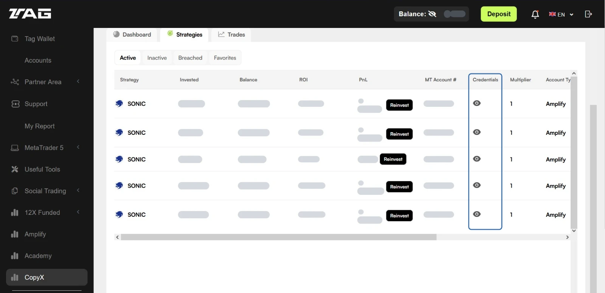
Zum Vergrößern anklicken. Grau verdeckt: Kontonummern und Beträge. - Wähle in MetaTrader 5 Datei → Handelskonto eröffnen (engl. File → Open an Account) und suche „T.M. Financials Ltd“.
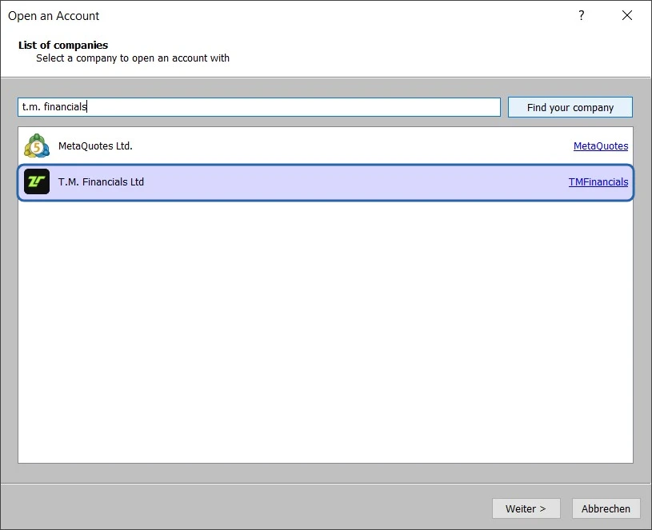
Klicke den Broker an und dann auf „Weiter“. - Wähle mit dem aktuellen Handelskonto verbinden (engl. Connect with an existing trade account) und gib Kontonummer (engl. Login) und Investor-Passwort (engl. Password) ein. Der Server steht schon da.
Mit dem Investor-Passwort kannst du nur schauen, nicht handeln.
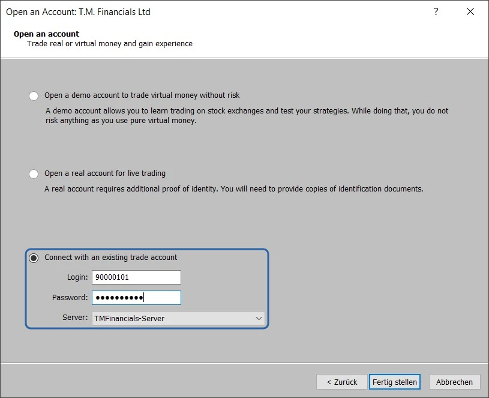
Die Kontonummer im Bild ist erfunden. Zum Schluss klickst du auf „Fertig stellen“. - Wiederhole das für jedes weitere Konto. Danach stehen alle Konten links im Navigator (Ansicht → Navigator, engl. View → Navigator, Strg+N). Ein Doppelklick wechselt das Konto.
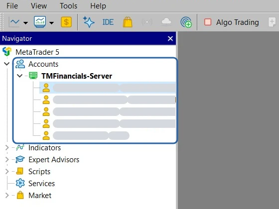
Grau verdeckt: Kontonummern und Namen.


Am Mac sind die Menüs gleich, nur ohne Tastenkürzel.
3. Report speichern
- Öffne MetaTrader 5 am Computer und wähle das Konto (Doppelklick im Navigator).
- Wähle Ansicht → Terminal (engl. View → Toolbox) oder drücke Strg+T.
- Klicke im Fenster Terminal (engl. Toolbox) auf den Reiter Kontohistorie (engl. History).
- Klicke mit der rechten Maustaste in die Liste und wähle Ganze Historie (engl. All History). Später reicht ein kürzerer Zeitraum, solange keine Lücke entsteht. Das Tool merkt eine Lücke.
- Klicke noch einmal mit der rechten Maustaste in die Liste, wähle Bericht (engl. Report) → HTML (Internet Explorer) und speichere die Datei.
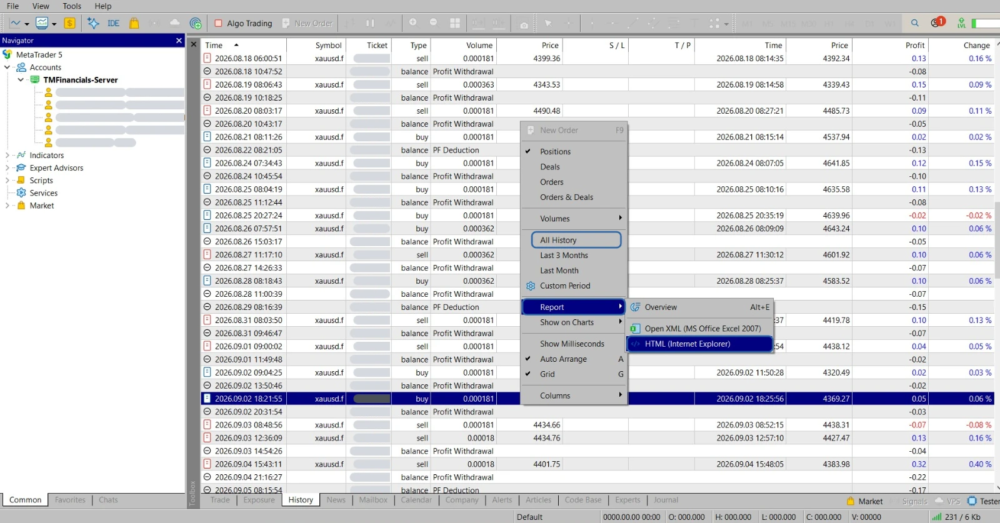
Grau verdeckt: Kontonummern und Namen. - Wiederhole das für jedes Konto. Die Dateien heißen meist ReportHistory-Kontonummer.html. Den Ordner wählst du beim Speichern selbst.

Am Mac klickst du mit zwei Fingern (oder mit ctrl-Klick) statt mit der rechten Maustaste.
4. Reports laden
Öffne die Trading-Bilanz. Der Reiter „Reports“ ist schon gewählt. Ziehe die gespeicherten Dateien in das Feld „Report-Dateien hierher ziehen“ oder klicke darauf und wähle sie aus. Du kannst alle Dateien auf einmal wählen.

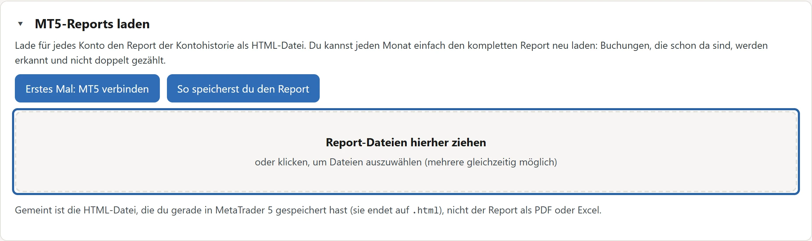
Gemeint ist die HTML-Datei aus MetaTrader 5 (sie endet auf .html), nicht ein Report als PDF oder Excel.
5. Trading Benefit wählen
Nach dem Laden stehen deine Konten in der Karte „Deine Konten“. Klicke bei jedem Konto in der Spalte „Trading Benefit“ auf das Auswahlfeld und wähle ×1, ×12 oder ×24. Solange er fehlt, steht dort „fehlt“. In der Spalte „Name“ kannst du jedem Konto einen Namen geben.

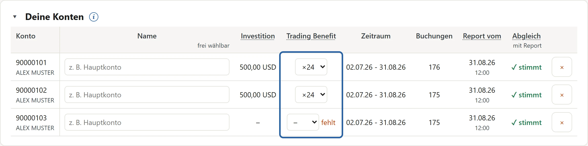
Der Trading Benefit heißt bei Tag auch „Amplifier“. Tag vervielfacht damit dein eingezahltes Geld im MT5: Bei ×24 stehen 100 USD als 2.400 USD da. Gewinne, Performance Fee und Gewinnauszahlungen vervielfacht Tag nicht.
So findest du ihn: Öffne im Tag-Portal CopyX → Follower Hub → Strategies und teile „Balance“ durch „Invested“. Die Spalte „Multiplier“ ist etwas anderes.

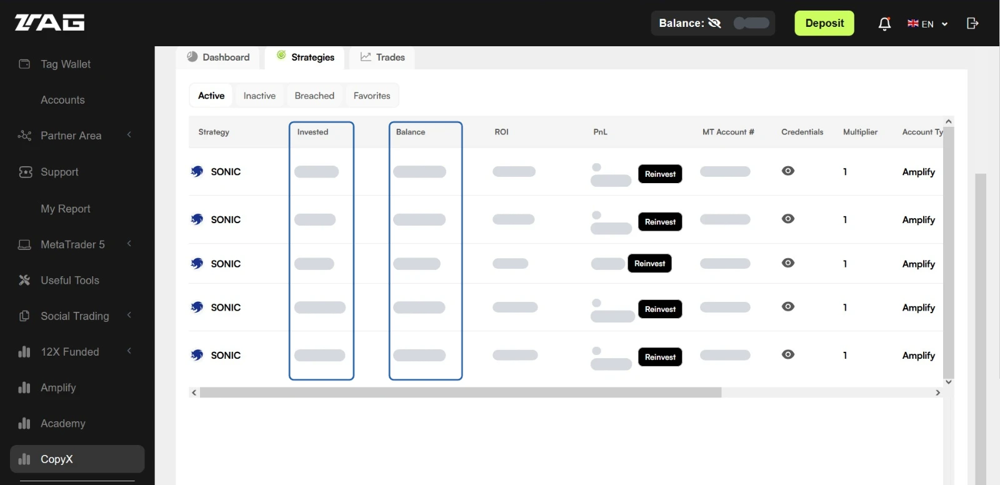
Hast du keinen Trading Benefit, wähle ×1. Für die Steuer spielt er keine Rolle, nur für Investition und Rendite.
6. Wechselkurse laden
Für Beträge in Euro und für die Steuer braucht das Tool den Wechselkurs jedes Tages, an dem du eine Buchung hast. Es nimmt den Referenzkurs der Europäischen Zentralbank (EZB). In USD funktioniert die Auswertung auch ohne.
Die meisten Tage sind schon im Tool eingebaut. Fehlen die neuesten, öffne den Reiter „Kurse“ und klicke auf „Kurse laden“.
Mit dem Häkchen „Fehlende Kurse automatisch laden“ holt das Tool fehlende Kurse von selbst, sobald du es öffnest, neue Reports lädst oder Tag-Daten einfügst. Ohne Häkchen fragt es nur, wenn du auf „Kurse laden“ klickst. Soll das Tool gar nicht ins Internet gehen, lade die Datei selbst von der Seite der EZB ↗ herunter und ziehe sie im Reiter „Kurse“ unter „Ohne Internet“ hinein. Bei jedem Abruf, auch beim Herunterladen der Datei, sieht die EZB deine IP-Adresse.
7. Tag-Daten einfügen
Im Reiter „Wallet“ hältst du fest, wie dein Geld zu Tag und zurück geflossen ist. Daraus rechnet das Tool „Dein echtes Geld“ und, wenn du mit USDC oder USDT ein- oder ausgezahlt hast, die Krypto-Steuer.
Öffne den Reiter „Wallet“. Beim ersten Mal kommt das Fenster „Was du hier machst“. Klicke dort auf „Mit den Tag-Daten anfangen“. Dann öffnet sich das Fenster „Daten“ mit dem Feld „Hier einfügen“. Später findest du es im Reiter „Wallet“ oben unter „＋ Daten“.

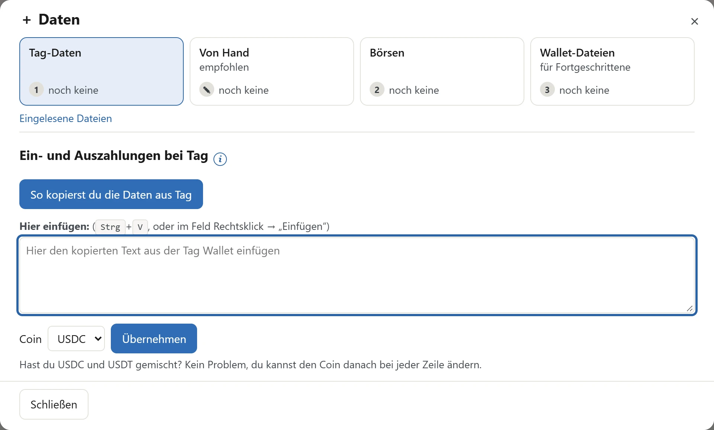
Öffne das Tag-Portal in einem zweiten Browser-Tab und gehe so vor:
- Klicke im Tag-Portal links auf Tag Wallet.
- Einzahlungen: Öffne „Transaction History“ und wähle bei „From“ ein Datum vor deiner ersten Einzahlung.
- Klicke auf „More Filters“, wähle bei „Method“ „PSP“ und klicke auf „Submit“. Wähle bei „Show“ die größte Zahl.
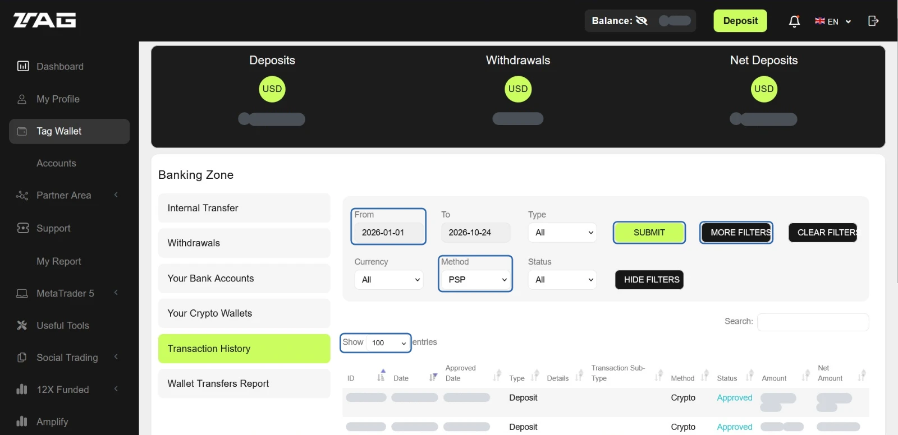
Grau verdeckt: Guthaben, Summen, Nummern, Datum und Beträge. - Kopiere die ganze Seite und füge sie ins Feld „Hier einfügen“ ein. Klicke dann auf „Übernehmen“.
Oben auf der Seite stehen deine Summen bei Tag (Deposits, Withdrawals), unten die Anzahl der Einträge. Damit prüft das Tool, ob alles angekommen ist.
Klicke auf die Seite und drücke Strg+A, dann Strg+C. Klicke ins Feld „Hier einfügen“ und drücke Strg+V.Das Tool zeigt dann eine Vorschau:
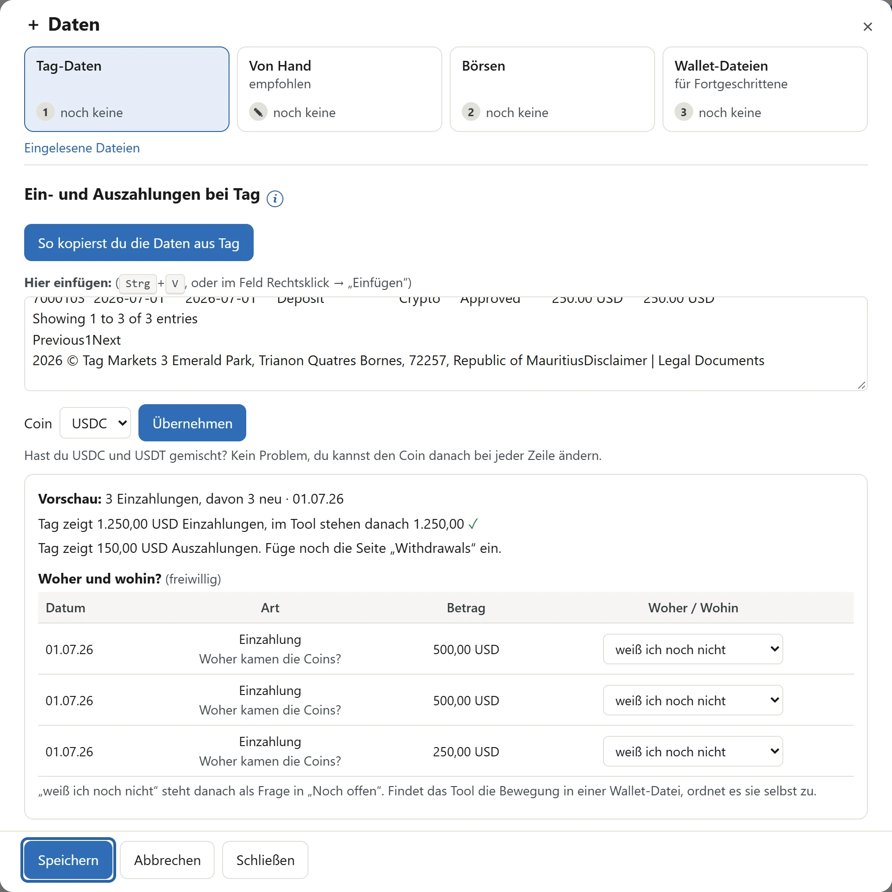
Beispiel mit erfundenen Daten. Im Beispiel fehlen die Auszahlungen noch, darum steht dort „Füge noch die Seite ‚Withdrawals‘ ein.“ Bei „Woher und wohin?“ kannst du auch später antworten. Klicke auf „Speichern“.
- Auszahlungen: Öffne „Withdrawals“ und klicke auf „Display Processed Withdrawals“ (danach steht dort „Hide Processed Withdrawals“). Wähle bei „Show“ die größte Zahl, kopiere die ganze Seite und füge sie ins Feld „Hier einfügen“ ein. Klicke dann auf „Übernehmen“.
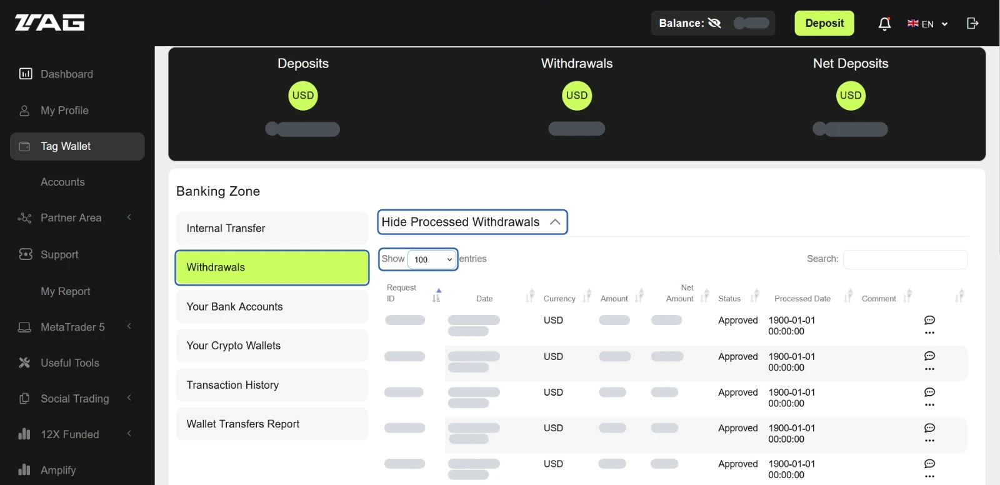
Grau verdeckt: Guthaben, Summen, Nummern, Datum und Beträge. - Du kannst jederzeit wieder alles einfügen. Was schon da ist, erkennt das Tool.


Am Mac nimmst du ⌘ Cmd statt Strg. PSP ist ein Filter bei Tag: Er zeigt nur Einzahlungen von außen, nicht die Überträge zwischen der Tag Wallet und deinen Trading-Konten.
Gut zu wissen: Zahlst du bei Tag USDC ein, tauscht Tag sie sofort in USD. Steuerlich ist das ein Verkauf. Bei einer Auszahlung in USDC ist es umgekehrt ein Kauf. Das Tool rechnet mit USDC und USDT.
8. Wie es weitergeht
Danach findest du deine Zahlen in den Reitern „Auswertung“ und „Steuer“.
Jeden Monat (empfohlen)
- Speichere in MetaTrader 5 für jedes Konto den Report neu.
- Ziehe alle Reports in den Reiter „Reports“. Was schon da ist, erkennt das Tool.
- Speichere eine Sicherung.
Später kommen in diese Anleitung: Wallet-Dateien, Börse, Steuer und Sicherung.